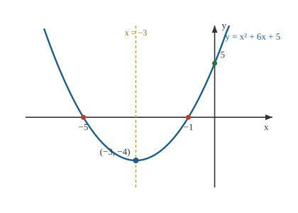

<script>if(location.hostname.endsWith('onrender.com'))location.replace('https://math-sandbox.pages.dev'+location.pathname+location.search+location.hash)</script>
<section class="theory" data-section="IGCSE-14.5">
<h2>14.5 Quadratic formula</h2>
<p class="src">Based on Cambridge IGCSE Mathematics Core and Extended Coursebook (Karen Morrison and Nick Hamshaw), Chapter 14 Further solving of equations and inequalities, printed pp.455–458 (the quadratic formula, Worked examples 19–20 style, Exercise 14.9). Printed pages were read from part_045.pdf (printed 455–458 = pages 4–7 of the part). Own wording and new numbers.</p>
<p class="key-words"><strong>Key words:</strong> <em>quadratic formula</em>, <em>quadratic equation</em>, <em>root</em>, <em>completing the square</em></p>
<p>If you complete the square for the general <strong>quadratic equation</strong> \(ax^2+bx+c=0\) (with \(a\neq 0\)), the result is the <strong>quadratic formula</strong></p>
<p>\[x=\dfrac{-b\pm\sqrt{b^2-4ac}}{2a}.\]</p>
<p>The symbol \(\pm\) means that there are two values to calculate: one with a plus and one with a minus in that position. The formula can be used even when the quadratic expression does not factorise. Its advantage over <strong>completing the square</strong> is that you do not need extra steps when the coefficient of \(x^2\) is not 1.</p>
<p>Identify \(a\), \(b\) and \(c\) carefully, and keep brackets around a negative coefficient so that you square it correctly. If a question asks for a number of decimal places or significant figures, or for an exact answer in surd form, that is a sign that the formula (or completing the square) is expected. Exact surd answers are more accurate than a decimal approximation. If the expression does factorise, factorising is usually quicker, and the formula should give the same roots.</p>
<p>The roots are the \(x\)-intercepts of the graph of \(y=ax^2+bx+c\). The interactive figure below starts at the quadratic of Worked example 1; you can change \(a\), \(b\) and \(c\) and watch the intercepts and the turning point move.</p>
<div class="ms-widget" data-widget="parabola" data-a="1" data-b="6" data-c="5">
<figure class="ms-widget-fallback">

<figcaption>The graph of \(y=x^2+6x+5\) crosses the \(x\)-axis at \(-5\) and \(-1\). The turning point is \((-3,-4)\).</figcaption>
</figure>
</div>
<div class="worked-example">
<h4>Worked example 1</h4>
<p class="src">Book: Worked example 19 style, printed pp.456–457. New numbers.</p>
<p>Solve \(x^2+6x+5=0\) by using the quadratic formula.</p>
<ol class="steps">
<li>Here \(a=1\), \(b=6\) and \(c=5\), so \(x=\dfrac{-6\pm\sqrt{6^2-4\times 1\times 5}}{2}=\dfrac{-6\pm\sqrt{16}}{2}=\dfrac{-6\pm 4}{2}\). <span class="mark">M1</span></li>
<li>The roots are \(x=\dfrac{-6+4}{2}=-1\) and \(x=\dfrac{-6-4}{2}=-5\). <span class="mark">A1</span></li>
</ol>
<p class="final"><strong>Answer:</strong> \(x=-1\) or \(x=-5\)</p>
<p>These are the same roots as \((x+1)(x+5)=0\). When an expression factorises, that method is simpler, but the formula still works.</p>
</div>
<div class="worked-example">
<h4>Worked example 2</h4>
<p class="src">Book: Worked example 20 style, printed p.457. New numbers.</p>
<p>Use the quadratic formula to find the exact solutions, in surd form, of \(2x^2-3x-7=0\).</p>
<ol class="steps">
<li>\(a=2\), \(b=-3\) and \(c=-7\). Then \(b^2-4ac=(-3)^2-4\times 2\times(-7)=9+56=65\). <span class="mark">M1</span></li>
<li>So \(x=\dfrac{-(-3)\pm\sqrt{65}}{2\times 2}=\dfrac{3\pm\sqrt{65}}{4}\). <span class="mark">A1</span></li>
</ol>
<p class="final"><strong>Answer:</strong> \(x=\dfrac{3+\sqrt{65}}{4}\) or \(x=\dfrac{3-\sqrt{65}}{4}\)</p>
</div>
<div class="worked-example">
<h4>Worked example 3</h4>
<p class="src">Book: the tip on brackets around a negative coefficient, printed p.457. New numbers.</p>
<p>Solve \(-2x^2+5x+3=0\).</p>
<ol class="steps">
<li>\(a=-2\), \(b=5\) and \(c=3\). Then \(b^2-4ac=25-4(-2)(3)=25+24=49\). <span class="mark">M1</span></li>
<li>\(x=\dfrac{-5\pm 7}{2\times(-2)}\). This gives \(x=\dfrac{2}{-4}=-\dfrac{1}{2}\) or \(x=\dfrac{-12}{-4}=3\). <span class="mark">A1</span></li>
</ol>
<p class="final"><strong>Answer:</strong> \(x=-\dfrac{1}{2}\) or \(x=3\)</p>
</div>
<h3>Common mistakes</h3>
<ul>
<li>Forgetting the brackets when \(b\) is negative, and calculating \(-b^2\) instead of \((-b)^2\).</li>
<li>Taking \(a\) as 1 when the coefficient of \(x^2\) is another number, or forgetting the sign of \(a\) in the denominator \(2a\).</li>
<li>Leaving the equation not equal to zero, so that \(c\) is read incorrectly.</li>
</ul>
<h3>Quick checks</h3>
<div class="quick-check" data-q="QC1">
<h4>Quick check 1</h4>
<p>For the equation \(x^2+4x+3=0\), what is the value of \(b^2-4ac\)?</p>
<details><summary>Worked solution</summary>
<ol class="steps">
<li>\(a=1\), \(b=4\), \(c=3\), so \(b^2-4ac=16-12=4\). <span class="mark">A1</span></li>
</ol>
<p class="final"><strong>Answer:</strong> \(4\)</p>
</details>
</div>
<div class="quick-check" data-q="QC2">
<h4>Quick check 2</h4>
<p>The equation \(x^2+4x+3=0\) has two roots. What is the larger root?</p>
<details><summary>Worked solution</summary>
<ol class="steps">
<li>\(x=\dfrac{-4\pm\sqrt{16-12}}{2}=\dfrac{-4\pm 2}{2}\), so the roots are \(-1\) and \(-3\). The larger root is \(-1\). <span class="mark">A1</span></li>
</ol>
<p class="final"><strong>Answer:</strong> \(-1\)</p>
</details>
</div>
<div class="quick-check" data-q="QC3">
<h4>Quick check 3</h4>
<p>For the equation \(3x^2-2x-1=0\), what is the value of \(b^2-4ac\)?</p>
<details><summary>Worked solution</summary>
<ol class="steps">
<li>\(a=3\), \(b=-2\), \(c=-1\), so \(b^2-4ac=4-4\times 3\times(-1)=4+12=16\). <span class="mark">A1</span></li>
</ol>
<p class="final"><strong>Answer:</strong> \(16\)</p>
</details>
</div>
<p class="marks-key"><strong>Marks:</strong> M = method, A = accurate answer (depends on M), B = independent mark. Leave exact values exact unless a decimal approximation is asked for.</p>
</section>
